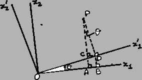
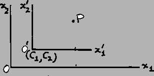

Problem B
Translation or Rotation
Input: standard input
Output: standard output
Time Limit: 1 second


A line segment is given in the plane by its endpoints a = (ax,
ay)
and b = (bx,
by),
where a
is not equal to b.
The segment has been moved either by a counterclockwise rotation around some
point or by a translation and the final coordinates of its endpoints are known a' = (a'x,
a'y)
and b' = (b'x,
b'y),
where endpoint a'
corresponds to the original endpoint a, and b' to b. Your
task is to decide whether the segment was rotated or translated and to report
your findings.
Input
Your program should read input from standard. Each line of the input contains 8 floating-point numbers, separated by spaces and giving the values of ax, ay, a'x, a'y, bx, by, b'x, b'y. A line containing 8 zeros terminates the input and should not be processed.
For each line of input produce one line of output in the format given in the sample, where floating-point numbers are printed to 1 digits of the fractional part. The reported angle of rotation should be nonnegative and smaller than 360. In your computations, two floating-point numbers differing by less than 10e-8 should be considered equal. Note that when the segment has not changed its position then report No move.
0 2 1 3 2 0 3 10 2 2 0 1 3 3 12.1 0 0 2.1 3 1 -1 32.1 0 2.9238080804 0.7366059011 0 2.1 -0.0347392304 0.99544525135 1 2 -2 10 1 2 -71 17 1 17 -14 -14 -14 -140 0 0 0 0 0 0 0
|
Translation by vector <1.0,1.0>.Translation by vector <2.0,-2.0>.Rotation around (0.0,0.0) by 90.0 degrees counterclockwise.Rotation around (1.5,1.5) by 40.0 degrees counterclockwise.Rotation around (2.0,1.0) by 270.0 degrees counterclockwise.No move.
|
Problem
setter: Poitr Rudnicki, University of Alberta, Canada